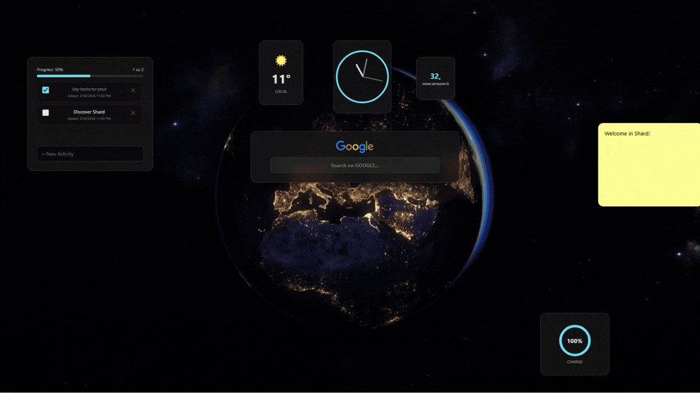

Welcome to SHARD
Discover SHARD: Your New Dimension on the Web
Forget the classic, boring, and static "New Tab" screen of your browser. SHARD is not just a simple extension: it's an Interactive Web Dashboard, a real "Operating System" integrated directly into Google Chrome.
Born from the inspiration of the Hack Club's Flavourtown contest, SHARD was created with a rebellious and innovative philosophy: to give the user total control back over their digital space, allowing them to shape, extract, and manipulate the web at will.

What is SHARD?
SHARD is a dynamic and modular workspace that replaces your browser's home page. Instead of opening dozens of tabs to check the news, a stock price, your to-do list, or the weather, SHARD allows you to have everything under control in a single command dashboard.
The "Shards"
Web fragments. Live data extracted directly from your favorite sites that update in real time.
The "Portals"
Entire web sites encapsulated and navigable in floating, resizable windows on your home page.
Native Widgets
Local mini-applications (Clock, Weather, Spotify, Notes) written in pure, lightweight JavaScript.


How Does the Magic Work? (Under the Hood)
SHARD doesn't just beautify the home page; it performs real technical acrobatics using the latest Manifest V3 APIs.
Real-Time Data Extraction
Thanks to the injection script (content.js), SHARD turns your cursor into a precision tool. By holding down Ctrl and clicking on text, it calculates the exact CSS path. The background engine constantly polls that site, bypassing the cache (Pragma: no-cache) to guarantee data updated by the second.
Breaking Down Security Walls
Many sites prevent embedding. SHARD uses declarativeNetRequest rules to intercept traffic and surgically remove headers like x-frame-options. The result? You can open complex sites in floating windows, bypassing browser blocks.
Zero-Lag Performance and Privacy
The entire visual architecture is written without heavy frameworks. Your layouts and data are saved exclusively on your computer via chrome.storage.local. No external servers, no tracking: total privacy.
Who is it for?
Developers and Hackers
They will appreciate its raw and ingenious nature. Interfacing with UNIX timestamps, extracting CSS selectors, and manipulating the HTTP header to push software limits.
Power Users and PROs
Traders watching stock tickers, data analysts, or managers who want a to-do list, calendar, and email in a single "Heads-Up Display" view.
Students and Creatives
Organize your studies, take notes on the fly, listen to Spotify without switching tabs. All in an aesthetically pleasing environment.
Those who hate clutter
If your browser constantly has 50 open tabs eating up all your RAM, SHARD is the ultimate cure to restore order.
Installation
Installation guide on Chrome / Edge / Brave (Unpacked Extension)
Download the files
Download the project's ZIP file from the button in the left corner of the screen (If you have any problem, you can also use the direct link: https://github.com/Lorenzo-U/shard_extension/releases/tag/v1.0) and choose a folder on your computer to extract it.
Open Extensions management
Open Google Chrome (or a compatible Chromium browser like Edge or Brave). In the address bar, type: chrome://extensions/ and press Enter.
Enable Developer Mode
At the top right of the page, toggle the "Developer mode" switch.
Load the extension
Click on the "Load unpacked" button that appeared at the top left. Select the folder (the one containing the manifest.json file) you extracted in step 1. You might get a message like: "This page was changed by the SHARD extension. Do you want to keep it or revert?" Click keep.
Remove the Footer bar
Right-click on the bottom bar and select 'Don't show the footer', now you can have SHARD in full screen!
Installation Completed!
Open a New Tab in Chrome: you should see the beautiful SHARD dashboard instead of the standard page.
User Guide
Learn to manipulate the web with SHARD's tools.
1. Capture live data (Create a "Shard")
Extract text in real-time from any website to always have it updated on your dashboard.
- Go to any website.
- Hold down Ctrl and Left-click on the text element you want to capture.
- The "SHARD DETECTED" banner will appear.
- Click on "DATA (Live)".
- Open a New Tab: your data will be there, updated automatically! To select the refresh rate (how often Shard should check if the data has updated), go to settings/general.

2. Create a "Portal" (Entire site)

Encapsulate an entire website within your dashboard for parallel browsing.
- From the Web: Click Ctrl + Click anywhere and choose "WEBSITE".
- From the Dashboard: Click the + at the bottom right and paste the URL.
3. Edit Mode (Drag & Drop)
Customize the layout by clicking on the pencil icon at the top right.
- Move: Drag the title bar.
- Resize: Drag the bottom right corner.
- Delete: Click the red dot.

Native Widget Catalog
Add local mini-applications to expand your Dashboard's features.
Search

Search the web from a single point. Supports major search engines.
Note: To change the default search engine, go to Settings < General settings < Interface and search < Default search engine and choose between Google, Bing, DuckDuckGo, and Ecosia.
Clock

Always stay on time. You can use local time or different time zones.
Note: You can choose which timezone to use directly while inserting the widget.
Weather

Real-time local forecasts and current temperature.
Note: Shard uses the Open-Meteo API for weather forecasts. When you insert a widget, the location is automatically set to "local" and you will be asked to authorize access to your location so you can view the weather based on your current location. To change the location to a default city, such as 'Rome,' simply go to Settings < Widget < Weather < Position and select manual city. It may take up to a few dozen seconds for the widget to load after insertion. Once inserted, the widget should function without any issues. Don't forget to save your changes using the dedicated button at the bottom right of the settings!
To-Do List

Manage your daily tasks directly from your home page.
Note: If you don't want to see the 'X' or choose whether to display the task creation date, simply go to Settings < Widget To-Do List and choose 'yes' or 'no' for 'Show "✕" button (Quick Delete)' and 'Show Task Added Date'. Don't forget to save your changes using the dedicated button at the bottom right of the settings!
Battery

Monitor the status and charge percentage of your PC directly from the browser. On desktop computers, it will always show as 100% charged.
Notes

It saves automatically and instantly. You don't need to be in 'edit' mode to write on a note.
Note: To choose the font of the notes or the text size, go to Settings < Widget < Notes. Don't forget to save your changes using the dedicated button at the bottom right of the settings!
Spotify

Music lover? Add a track, a playlist, an album, or a podcast directly to SHARD. If you experience any issues, check the FAQ section.
Note: Spotify widgets come in standard sizes, and therefore, resizing them might cause display issues with the information. To listen to full tracks and podcasts, make sure you have a Spotify account and are logged in at open.spotify.com. The link to insert is the one you can get by clicking 'share' on an album, song, or playlist.
Troubleshooting Center
(Q&A and FAQ)
Welcome to the SHARD diagnostic section. Since SHARD actively manipulates web page code and your browser's network policies, you might encounter unexpected behaviors. Find your issue below to discover exactly what happens "under the hood" and how to fix it.
1. Installation and Startup
Chrome keeps asking me to "Disable developer mode extensions" at every startup. What should I do?
This is standard security behavior for Google Chrome (and Edge) to warn you that you are using an "unpacked" extension. Unfortunately, until SHARD is officially published on the Chrome Web Store, this warning will appear. Simply click the "X" to close it and continue using your dashboard.
(Enterprise/School Users) Chrome prevents me from installing SHARD, saying it is "Blocked by the administrator".
Devices managed by corporate or school policies (Google Workspace Education/Enterprise) often completely disable Developer Mode or the installation of extensions outside the Web Store. There is no technical bypass for this: you must ask your IT administrator for permission, switch Chrome profiles, or log in with another personal email.
I loaded the folder but I get a "Loading error" (Error loading extension) in the extensions panel.
Make sure you have selected the exact folder containing the manifest.json file. If you extracted the .zip file into a folder that contains another folder inside it (e.g., shard_v3/shard_v3/manifest.json), you must select the innermost one. Check that you haven't deleted any files inside it.
The Ctrl + Click combination to capture data doesn't work on some pages.
There are two possible causes:
- System Pages: Chrome strictly forbids the execution of scripts (content.js) on internal pages (like chrome://settings) and the Chrome Web Store. On these sites, SHARD is disabled by default.
- Highly Protected Sites: Some complex websites fiercely intercept mouse clicks (using
stopPropagationin Javascript) for their own internal functions, blocking our detector. If this operation doesn't work on any site at all, try changing your browser's privacy settings or switch it (see supported browsers).
2. "Shards" (Live Data)
My Shard shows "Not found" (in orange). What does it mean?
The CSS selector you saved no longer matches any element on the original page. Websites are updated by their developers, changing the HTML structure. Solution: Close the Shard in edit mode, go back to the original site, and repeat the capture procedure (Ctrl + Click).
My Shard shows "Network err." (in red).
The background engine of SHARD (background.js) cannot contact the server of the original site. Possible causes: You are offline, the source website is temporarily unreachable, or the site has implemented anti-bot or anti-scraping blocks that reject repeated requests.
My Shard shows "Syntax err." (in red).
The saved textual "path" (CSS Selector) is corrupted and contains invalid characters. Delete and recreate the widget.
I captured data from a dynamic website (e.g., a SPA in React/Vue), but the Shard appears empty!
Advanced technical issue: SHARD downloads the raw HTML code of the site in the background to read your data. However, some modern sites load texts using Javascript after the page opens. Since SHARD's background extraction doesn't execute Javascript for performance reasons, the data appears empty.
Solution: SHARD works perfectly on server-side rendered sites (Wikipedia, Amazon, many stock/news sites), but struggles with pure web apps. In these cases, we recommend including the entire page as a "Portal (Website)".
I captured data from my bank account, or my followers on a private dashboard, but the Shard returns "Sign in to continue".
Although SHARD's background fetch calls attempt to include your session cookies, some sites use extra security measures (CSRF Tokens, SameSite=Strict cookies) that prevent data reading if you don't have the tab physically open.
3. Portals (Full Web Pages / Iframes)
Why do some sites like Netflix, banks, or Github refuse to load inside a "WEBSITE" Portal?
SHARD uses advanced rules (declarativeNetRequest) to tear down walls like x-frame-options and content-security-policy that normally block sites from being included in iframes. However, ultra-secure sites use "Framebusting Javascript": internal scripts that realize they are in a SHARD window and force a blank page. This cannot be bypassed for obvious banking/DRM security reasons.
I click a link inside a Portal, but instead of navigating within the portal, a new tab opens. Why?
Many developers insert target="_blank" into their links, which forces opening in a new tab. Unfortunately, if it's in the site's original code, SHARD must respect it.
In a Portal, I try to log in but I keep getting kicked out or it says "Cookies disabled".
If you have set Chrome to "Block third-party cookies" (in the browser's privacy settings), Chrome will consider the site inside the Portal as a "third party" and prevent it from saving the login. You must allow third-party cookies for logins to work in portals.
4. Built-in Widgets
The Spotify Widget only plays 30 seconds of the song!
This happens if you haven't logged into the Spotify web player, or if you have a free account. Make sure to open open.spotify.com in a regular tab and log in.
The Weather Widget can't find my city or shows the wrong temperature.
Be specific with your formatting! Type "Rome, IT" or "Paris, FR". If you leave it in Automatic mode and are using a VPN, the weather will show the city of your VPN server, not your real location.
The clock shows the wrong time or I want to set a different time zone, but it doesn't work.
If you enter the time zone manually, you must use the IANA Time Zone format (e.g., America/New_York, Europe/Rome, Asia/Tokyo). If you leave it on "local", it will draw from your operating system's clock; make sure your Windows/Mac time is correctly synchronized with the Internet.
5. Workspace, Layout, and Saving
I lost all my Shards, my To-Do list, and my Notes! What happened?
SHARD saves the entire ecosystem in chrome.storage.local to guarantee maximum privacy (no data goes to external servers). If you cleared Chrome's "Cached images and files" or "Cookies and other site data", or used aggressive cleaning programs like CCleaner, you also wiped out SHARD's database. Always perform regular backups (Export)!
When I try to restore my backup file (.json), I receive the message: "The file is not a valid Shard OS backup".
This happens if:
- You tried to import a file that was not generated by SHARD.
- You opened the .json file with a text editor and accidentally inserted spaces, deleted commas, or corrupted the JSON structure. If you need to edit the backup manually, verify that the formatting is intact using an online JSON validator.
I added a custom background image via URL, but the background remained black.
The image you chose is probably hosted on a server that blocks Hotlinking (CORS - Cross-Origin Resource Sharing). The browser refuses to download it. Solution: Use a direct link to an image hosted on services like Imgur, GitHub, or Unsplash.
My widgets ended up "off" the screen and I can no longer drag them!
This can happen if you drastically resized the Chrome window (for example, switching from a 4K monitor to a small laptop screen). Solution: Activate "Edit Mode" in the top right. This often allows you to reattach them to the borders. If the widget is totally lost in the void, delete it from the settings menu or, in the worst case, restore a previous backup.
Does SHARD slow down my computer or make my laptop overheat?
It depends on your layout. SHARD itself is very lightweight (Zero frameworks, pure Vanilla JS). However, if you add 10 Portals (Websites) that simultaneously load 10 heavy sites (like real-time TradingView charts or autoplaying videos), it's like having 10 Chrome tabs open simultaneously. Tip: Use Portals sparingly and take advantage of "Live Data (Shards)" to extract only essential texts: they require on average 0.1% of the power of a full portal.
Privacy & Security
SHARD was built with an absolute "Privacy-First" philosophy.
1. No External Servers
Everything you do in SHARD stays on your computer. The extension does not have any cloud databases.
2. No Tracking
Only an analytics system (Google) is integrated to provide the developer with data regarding SHARD's usage. External connections are only made to Weather APIs, Search, and the sites you add yourself.
3. Open/Transparent Code
You can open and inspect any JavaScript file to verify the absence of malicious code.
4. Privacy Policies
You can read the full privacy policy
System Requirements
What you need to run SHARD smoothly:
Supported Browsers
- Google Chrome (Recommended)
- Microsoft Edge
- Brave Browser
- Any Chromium-based browser with support for Manifest V3
Hardware
- Optimized for 1920x1080 or higher. SHARD also supports smaller screens, but the style and dimensions may be altered
- Minimum: 4GB RAM
- Recommended: 8GB+ RAM (for intensive use of multiple Portals)
- Mouse/Trackpad (required for Edit Mode). It is not possible to use all features on Touch Screen devices.
Lorenzo U.
Creator & Developer
Hi! I'm Lorenzo,
I'm almost 16 and, I imagine just like you if you're reading this page, I spend most of my time with an open code editor or a running 3D printer. I love designing, building, and solving problems. If you're a junior dev or a maker and you've been waiting for it, here is my stack and what I do:
Code & AI: I mostly develop for the web (HTML, CSS, JS, PHP, SQL). Lately, I've been having fun integrating LLM APIs and building AI bots for my projects. Beyond the web world, I also work on apps for the Apple ecosystem. A few years ago, I learned Swift (I'm currently a certified Apple Teacher).
3D Printing: In the past few years, I've learned how to model in Blender, Shapr3D and Tinkercad, how to slice with Cura, and, at the end, I print everything on WASP or BambuLab machines at my school.
Teaching & Robotics: I believe that if you know how to do something, you should also know how to explain it. That's why I've been teaching coding (mostly Swift) and robotics for two years now to younger kids at my old middle school. On the robotics side, I teach everything from the simpler Lego WeDo (for first-year students) up to COMAU industrial robotic arms (with the older kids).
My Vision: Technology is meant to solve real problems, not just to make cool things. My approach is simple: analyze the problem, write, test, read the logs (lots of error logs), fix, and try again. You always improve, one commit at a time.
If you're also always hunting for new projects or debugging something, you know what I'm talking about! 🛠️
While you're reading this page, I'm probably writing a new project, the 3D printer has just started printing a part of one future project, or maybe I'm trying to figure out why my code just stopped working (there were no bug 5 minutes ago). The world is full of bugs, but someone has to fix them, right?
Let's see you in the code.
Acknowledgements
Hack Club & Flavourtown
A special thanks to Hack Club and the Flavourtown competition, which provided the initial inspiration and the drive to push the limits of browser extension capabilities.
Open Source Community
SHARD wouldn't exist without the Open Source community. Thanks to the maintainers of public APIs (like Open-Meteo for free and trackless weather data) and to the creators of the Lucide icons used in this dashboard.
Friends and Family
A special thanks to my parents for supporting (and putting up with) me while I built all my projects, and this one in particular; to my brother for his constructive criticism (even if his goal is always just to criticize :); and last but not least, my friends and classmates who tested every single change to Shard and put up with listening to me talk about it on loop for the last 3 months.
Beta Testers
TO YOU! and all the geeks and hackers who are trying out SHARD, putting up with the bugs, and providing crucial feedback to make Shard the system I've always dreamed it would be.
Privacy Policy & Terms of Service
Effective Date / Last Updated: April 3, 2026
Please read this document ("Agreement") carefully before downloading, installing, or using the browser extension named "Shard" ("Software", "Extension"). This Agreement constitutes a legally binding contract between the end-user ("User", "You") and the independent developer of the Software ("Developer", "We", "Us").
PART I: PRIVACY POLICY AND DATA PROCESSING
The protection of the User's privacy is a founding principle of Shard's architecture. The Software is designed to operate strictly on a client-side logic, ensuring that data remains the exclusive property and under the full control of the User.
1.1 Absence of Proprietary Servers and Strictly Local Storage
The Developer does not own, manage, or rent any servers, databases, cloud infrastructure, or telemetry systems designed to receive data generated by the Extension. All information processed by Shard is stored exclusively locally on the User's device, utilizing the browser's native and standardized storage APIs (chrome.storage.local).
Locally stored data includes, but is not limited to:
- User-Generated Content: Texts entered into "Notes" widgets, task lists ("To-Do lists"), search preferences, and time zones.
- Network and Browsing Configurations: URLs provided by the User for embedding within the "Portals" function, links to media streaming services (e.g., Spotify).
- Structural Data (Shard Function): Source URLs, CSS selectors (DOM paths), and text snippets extracted from web pages designated by the User for real-time monitoring.
- Interface Preferences: Spatial coordinates of widgets (X and Y axes), dimensions (width and height), layout options, themes, and backgrounds.
1.2 Network Interactions with Third-Party Services
To perform its essential functions, the Software generates outbound network requests directly from the User's browser to third-party infrastructures. The Developer does not act as an intermediary in these communications:
- Background Updating (Data Fetching): The background service (
background.js) makes HTTP/HTTPS calls to the URLs saved by the User to extract and update snippet data (Shards) in real-time, bypassing the local cache. - Iframe Embedding (Portals): The display of external websites or multimedia widgets within the dashboard involves direct communication between the User's browser and the servers hosting those services.
The User acknowledges that these interactions are subject exclusively to the Privacy Policies and Terms of Service of the respective destination websites.
1.3 Data Management, Export, and Deletion
The User retains exclusive control over their data. The Software provides built-in tools for the manual export (in JSON format) of the entire configuration for backup purposes. Data deletion can be done selectively via the user interface (removing individual widgets/portals) or permanently by uninstalling the Extension from the browser, an action that will permanently purge the local database.
PART II: LICENSE AGREEMENT, TECHNICAL PERMISSIONS, AND LIMITATIONS OF LIABILITY
As Shard is an advanced utility tool that actively modifies browser rendering behavior and security policies for customization purposes, its use requires an explicit assumption of responsibility by the User.
2.1 System Authorizations and Permissions
The Software requires the acceptance of sensitive permissions during installation. The User consents to the use of these permissions, the technical necessity of which is explained below:
storage
Necessary for the implementation of the local database described above.
activeTab & scripting
Required to inject the scripts necessary to identify the CSS paths of elements selected by the User during active browsing, in order to configure data extraction (Shard function).
host_permissions
Essential global authorization to allow asynchronous data retrieval (fetch) from any domain specified by the User, as well as to enable the embedding of any web page within the dashboard.
declarativeNetRequest
Critical permissions used by the Extension to dynamically intercept and mutate HTTP response headers (removal of X-Frame-Options and CSP). Indispensable to allow the embedding (framing) of websites.
2.2 Technological Disclaimer and Limitation of Liability
THE SOFTWARE IS PROVIDED "AS IS" AND "AS AVAILABLE", WITHOUT WARRANTY OF ANY KIND, EXPRESS OR IMPLIED.
To the maximum extent permitted by applicable jurisdiction, the Developer disclaims all warranties regarding merchantability, fitness for a particular purpose, or non-infringement of third-party rights. The Developer does not guarantee in any way:
- The absence of bugs, fatal errors, slowdowns, or conflicts with other extensions or software operating on the User's device.
- The stability, persistence, or integrity of saved data. The User is solely responsible for performing regular backups via the export function. The Developer shall not be liable for any data loss.
- The continued functionality of third-party dependent features (e.g., structural DOM changes by monitored websites that render CSS selectors obsolete).
2.3 Improper Use, Legal Responsibility, and Violation of Third-Party Terms
The User acknowledges and accepts that the function of altering security headers is a powerful tool designed strictly for personal use and in controlled environments.
- Security Risks (Clickjacking and Vulnerabilities): By voluntarily removing the anti-framing protections of third-party sites to view them in their dashboard, the User knowingly exposes themselves to potential cybersecurity risks. The Developer is explicitly released from any liability.
- Violation of Terms of Service (TOS): Embedding certain websites, bypassing their security limitations, or automated and continuous data extraction (scraping) may constitute a direct violation of the Terms of Service of those websites. The User assumes total, exclusive, and unconditional responsibility for the use of such features.
2.4 External Distribution & "Developer Mode"
The User acknowledges that the Software is not distributed through the official Google Chrome Web Store. By proceeding with Sideloading, the User fully understands the inherent risks and releases the Developer and Google LLC from any liability.
2.5 Indemnification
The User agrees to indemnify, defend, and hold harmless the Developer from any claim, lawsuit, damage, or expense brought by third parties arising out of the User's non-compliant use of the Software or violation of third-party rights.
2.6 Documentation, Updates, and Support
This software is provided alongside its Official Guide (included in the package files as guide.html). The User is required to consult the documentation for correct instructions regarding manual installation procedures, updates, use of features, and data export.
For technical support, bug reports, or inquiries relating to this Policy, the User must exclusively refer to the official contact channels explicitly indicated within the Guide. The Developer reserves the right, but not the obligation, to provide updates or technical support.
Technical Documentation & Architecture (Developer Notes)
This section is dedicated to developers and geeks who want to explore SHARD's source code. Here we analyze the technical architecture, implemented security bypasses, and design choices that allow SHARD to function as a web-based operating system.
1. Base Architecture (Manifest V3)
SHARD is built entirely on the Google Chrome Manifest V3 specifications. This required abandoning the old persistent background pages in favor of Service Workers (background.js).
The core permissions required in manifest.json are:
- storage: For layout persistence in the local state (
chrome.storage.local). - activeTab & scripting: To inject scripts on-demand into specific pages, when necessary.
- declarativeNetRequest & declarativeNetRequestWithHostAccess: The beating heart of the "Portals" system, necessary to intercept and modify HTTP network headers.
-
(Host Permissions): Fundamental for the content script and to allow the background worker to makefetch()calls to any domain without encountering CORS blocks.
The extension overwrites the default page using the directive: "chrome_url_overrides": { "newtab": "dashboard.html" }
2. Injection and DOM Parsing (content.js)
The content.js file is automatically injected into all web pages (matches: ["). Its task is to transform the user's cursor into a visual scraping tool.
Event Detection
The script listens to the document object to intercept clicks. If it detects that the Ctrl or Meta (Mac) key is pressed during the click (e.ctrlKey || e.metaKey), it blocks the browser's default behavior with e.preventDefault() and e.stopPropagation().
CSS Generation Algorithm (getCssPath)
The most critical function of the content script is getCssPath(el). Once the target element is captured, the script must calculate a unique CSS selector to track it in the future:
- ID Verification: If the element has an
idattribute, the path stops there, as the ID is unique by definition. - DOM Tree Traversal: If there is no ID, the while loop goes up the DOM tree (
el.parentNode), recording the tag names. - nth-of-type Calculation: To avoid collisions (e.g., multiple sibling s), the script iterates over the
previousElementSiblingto calculate the exact index of the element (e.g.,div:nth-of-type(3) > span).Injected UI
Instead of injecting external CSS files that could conflict with the host page's style, the "SHARD DETECTED" banner interface is generated via an HTML template literal with inline CSS styles and isolated classes, minimizing DOM pollution.
3. The Fetch Engine and Cache Busting (background.js)
When the dashboard needs to update a "Shard" (live data), it doesn't do so directly from the client (dashboard.js), because it would run into lethal CORS blocks. Instead, it sends an IPC message (chrome.runtime.sendMessage) to the Service Worker (background.js) with the action fetchUrl.
Since Service Workers in MV3 are not subject to CORS policies (thanks to host permissions), the fetch is successful.
The Cache Problem:
Browsers tend to aggressively cache GET responses. To ensure that the Shard displays real-time data (e.g., a stock price per second), background.js performs extreme Cache Busting:
const timestamp = new Date().getTime();
const urlSeparator = request.url.includes('?') ? '&' : '?';
const urlNoCache = request.url + urlSeparator + "t=" + timestamp;
fetch(urlNoCache, {
cache: 'no-store',
headers: {
'Pragma': 'no-cache',
'Cache-Control': 'no-cache'
}
})By dynamically modifying the URL with a UNIX timestamp, the source server is forced to serve a fresh payload.
4. HTTP Header Manipulation: The "Portals" System (rules.json)
Allowing a user to encapsulate entire websites (like Spotify, YouTube, or news sites) within an <iframe> in the dashboard poses a huge problem: Framebusting.
Many servers set strict HTTP headers to prevent Clickjacking. SHARD disarms these defenses using the powerful declarativeNetRequest API.
The rules.json file intercepts all sub_frame requests and applies the remove operation to the following headers from the server-originated response:
- x-frame-options
- content-security-policy
- frame-options
This network-level approach (executed by Chrome's C++ engine even before the response reaches the V8 rendering engine) ensures that almost any site can be rendered in the dashboard's Portals.
5. State Management and Storage
No reactive framework (like React or Vue) was used. The entire "Operating System" is managed in pure Vanilla JavaScript (dashboard.js) to maximize performance and reduce footprint.
The system state (X/Y coordinates of windows, URLs, saved selectors, active widgets) is persisted as an array of JSON objects in chrome.storage.local.
Saving
Every time an element is moved or added, the local state is overwritten, updating the exact position.
Backup/Export
Exporting the layout simply serializes the entire content of chrome.storage.local, converting it into a Blob (application/json) that the user can download, ensuring total portability of their ecosystem.
6. Notable Workarounds: The Spotify Hack
Although rules.json removes framing policies, directly embedding Spotify tends to generate authentication issues or truncated playback if the user doesn't use the official channels (the iframe provided by Spotify itself).
To integrate Spotify natively into the widgets, dashboard.js leverages a known wrapping trick: it routes the widget through Google's proxy servers (googleusercontent.com/spotify.com/0). This bypasses local restrictions and stabilizes the player within the isolated dashboard.